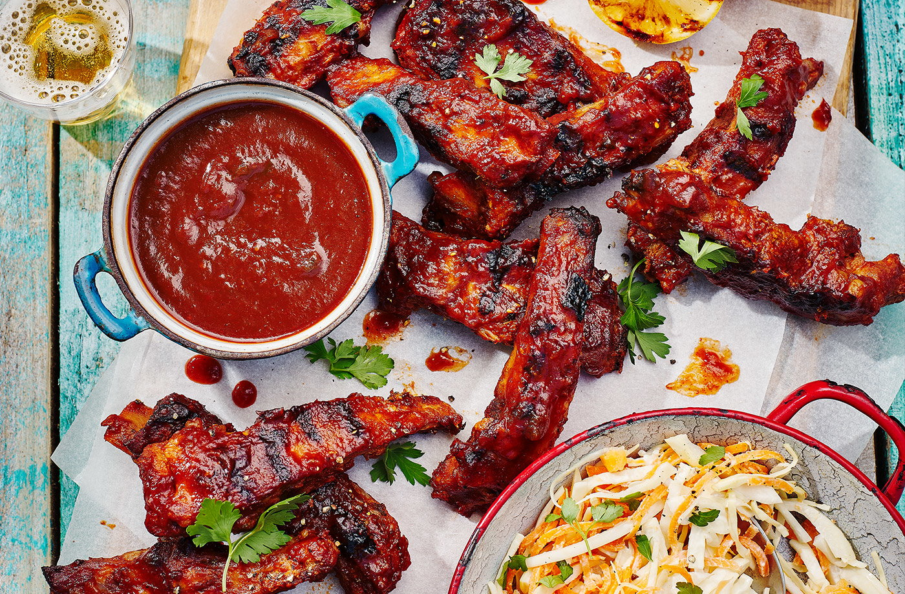

Texas-style ribs, BBQ sauce and slaw recipe

Description
Ribs are back on the menu this summer - tender, succulent and slathered in a sweet and sticky sauce, it's hard to look past these for your barbecue centrepiece. Serve with a fresh, crunchy slaw for the authentic Texas BBQ experience
Ingredients
- 20g sea salt flakes
- 20g cracked black pepper
- 3 tsp garlic powder
- 3 tsp onion granules
- 2½ tsp smoked paprika
- 2 x 700g packs pork ribs
For the BBQ sauce
- 1 onion, thinly sliced
- 2 x 700g packs pork ribs
- 1 green pepper, thinly sliced
- 2 celery sticks, thinly sliced
- 2 garlic cloves
- ½ green chilli, finely chopped
- ½ lemon, sliced
- 900g ketchup
- 110g brown sugar
- 110g Worcester sauce
- ½ tbsp smoked paprika
For the slaw
- 300g white cabbage, cored and thinly sliced
- 200g carrots, coarsely grated
- 1¼ tbsp white wine vinegar
- 225g mayonnaise
- ½ tsp cracked black pepper
- ¼ tbsp granulated sugar
Method
- Preheat the oven to gas 4, 180°C, fan 160°C. Combine the sea salt, pepper, garlic powder, onion granules and paprika in a deep roasting tin and evenly coat the ribs. Add 230ml water and cover tightly with a double layer of foil, then cook for 3 hrs.
- Meanwhile, make the BBQ sauce. Put the onion, pepper and celery in a large, deep pan with 70ml water, cover, bring to the boil, then reduce the heat and cook for 30 mins. Add the garlic cloves, re-cover and cook for 30 mins more, stirring occasionally. Remove from the heat, allow to cool a little and blitz with a stick blender until smooth. Add the remaining sauce ingredients and 85ml water, mix well and return to the heat. Bring to a simmer, stirring regularly so that the sugar dissolves. Continue to simmer for 1½ hrs until reduced by a quarter and thickened. Remove the lemon slices with a slotted spoon and discard.
- Mix the slaw ingredients together in a large bowl. Cover and transfer to the fridge for 1 hr.
- Heat the barbecue until the flames have died down and the coals are white and ashy, or a griddle pan until smoking. Spoon 1 tbsp of the BBQ sauce over each cooked rib. Finish the ribs on the barbecue or griddle for 15-20 mins, turning occasionally, until they are sticky and glazed. Serve with extra BBQ sauce and the slaw on the side.